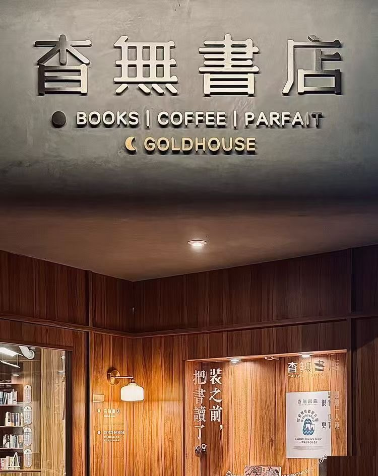
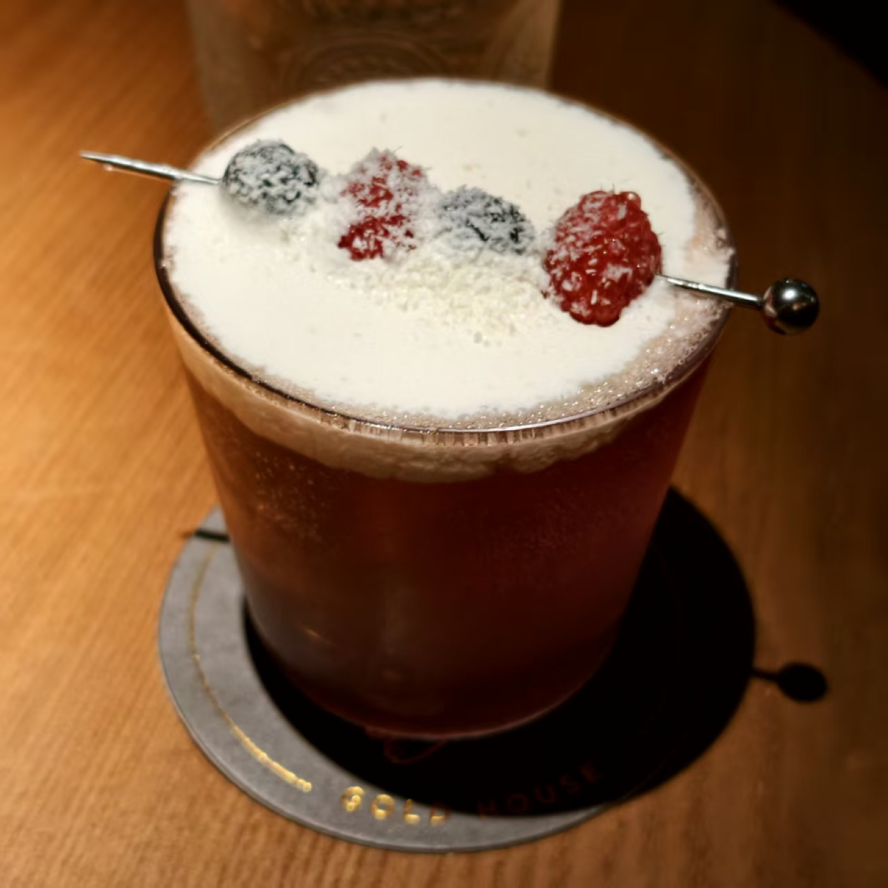
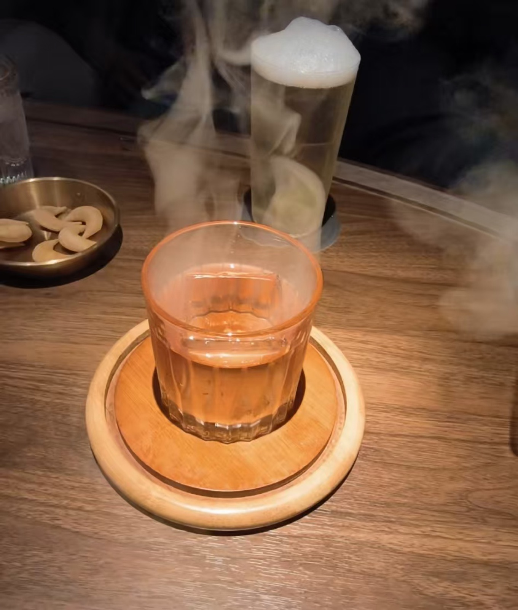

杳无书店
白天是书店，晚上从书店侧边往下走，地下另有一番天地，是一间威士忌酒吧，叫 Goldhouse。环境氛围和酒单品味都在线。在五道口附近，是我们下班后秘密唠嗑的常去处。

每次去惯例先点一个威士忌 set，三杯不同的纯饮，然后再点鸡尾酒。signature 鸡尾酒都用书名命名。一杯叫《细雪》，朗姆加梅果，从上面的奶油往下喝，清新绵密，和那本书的调性也很契合，非常好喝！我觉得一个酒吧的品味在线，同时能有一杯让人惊喜的特调，已经是足够难得。

另一杯的名字忘了，是烟熏威士忌，端上来带着盖子，盖得越久烟熏味越重。喝的时候觉得烟过了，反而没有纯饮好喝。
